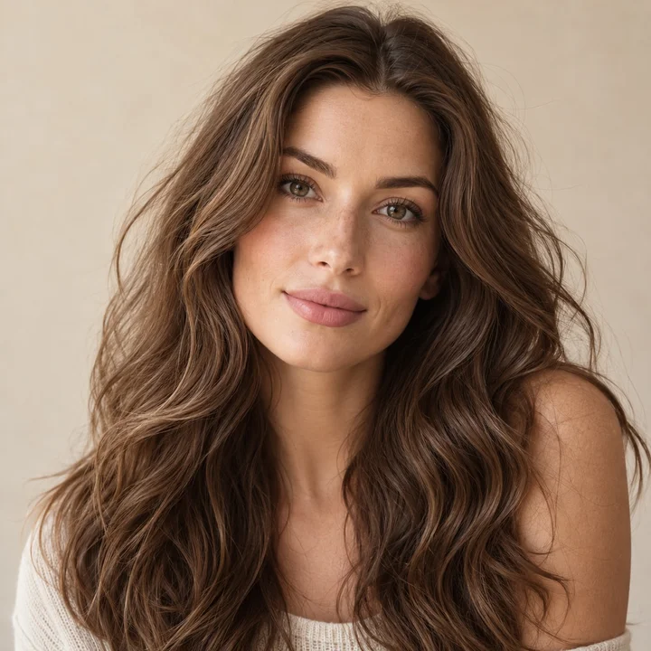
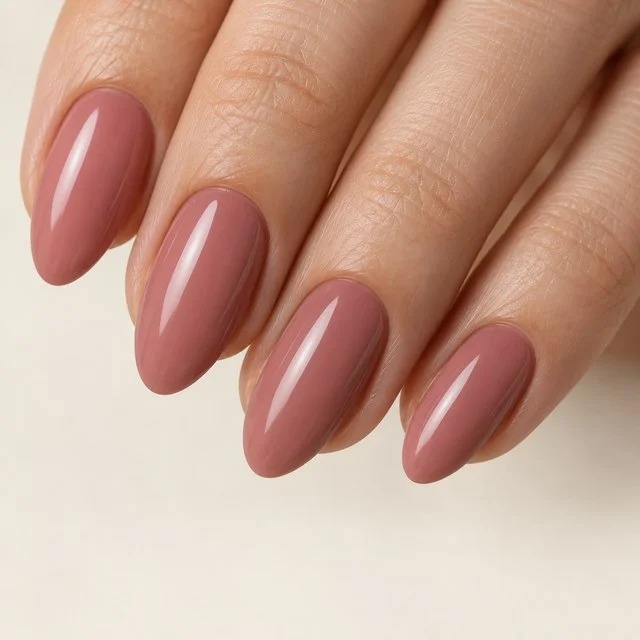

Illustrative color palette
01 Color passport
The colors that make you, you.
Discover your color season and keep your personal palette close. A starting point for clothes, makeup, and all the little details.
Explore in the appA LITTLE SELF-DISCOVERY
Meet the palette that feels like you. Find your season, then bring it to every look.
Your color story starts here ↓
GET TO KNOW STYLIST AI
Start with your colors. Explore everything they can become.
01 Color passport
Discover your color season and keep your personal palette close. A starting point for clothes, makeup, and all the little details.
Explore in the app Hair · lips · jewelry · drapes
Hair · lips · jewelry · drapes02 Try on
Explore hair colors, lip shades, jewelry, and color drapes on your photo. See a new direction before you make the change.
Explore in the app
A new shade, before the salon03 Nail recolor
Preview polish shades on your nails. Go from everyday nude to your next statement color before you pick a bottle.
Explore in the app Your photo. New possibilities.
Your photo. New possibilities.04 Makeup try on
Explore makeup looks on your photo and see how a new combination feels on you. Your next beauty idea starts here.
Explore in the app From your palette to your wardrobe
From your palette to your wardrobe05 Live shopping assistant
Point your camera at a color and compare it with your personal palette. Find shades that belong in your next outfit.
Explore in the appFROM CURIOUS TO COLOR-CONFIDENT
Use a clear selfie in natural light.
Explore your season and personal palette.
Try new looks, new shades, and smarter shopping.
Stylist AI uses your photo to suggest a seasonal color palette. A clear photo in natural light helps; lighting and camera settings can affect the result.
Yes. Explore photo try-on for hair, lip colors, jewelry, and drapes, plus makeup looks and nail recolor. Previews are a guide; real-world shades can look different.
The app is free to download, with in-app purchases. Some features require a subscription. See current pricing and any offers in the app before purchasing.
YOUR COLOR STORY STARTS WITH YOU
Download Stylist AI for iPhone.
Discover Stylist AI ↗